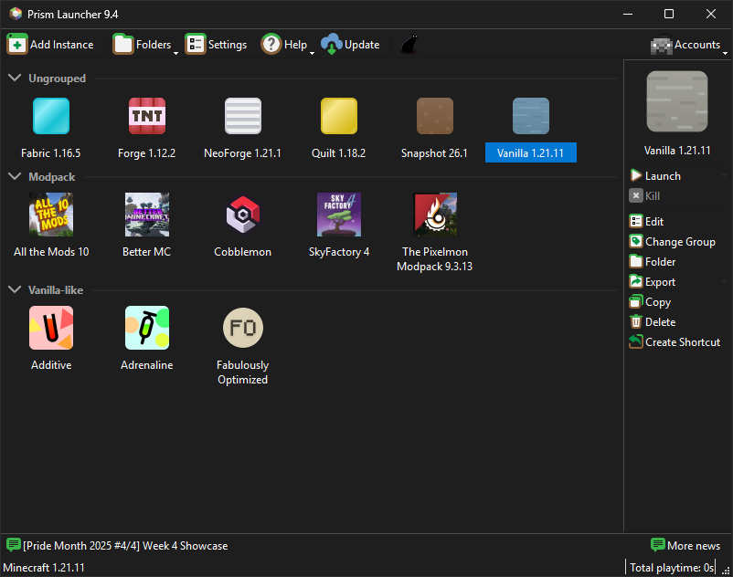
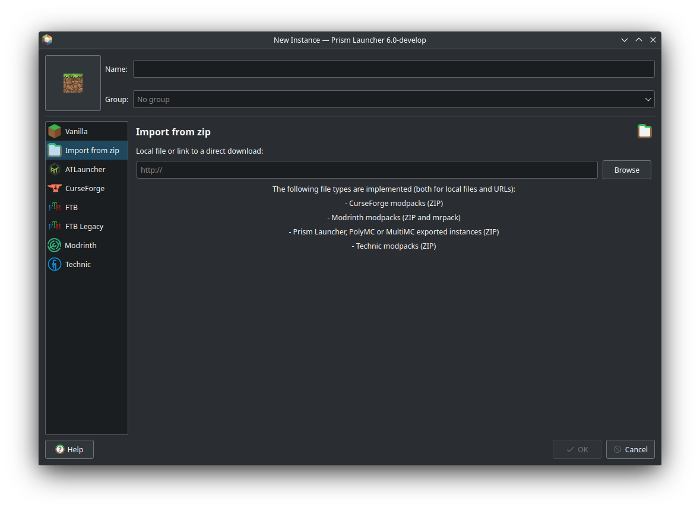

Tutorial de instalação do modpack
Instale o Prism Launcher, conecte sua conta do Minecraft e importe o modpack da Arca. No Prism, uma instância é uma instalação separada do jogo, com seus próprios mods, configurações e mundos.
Instalar o Prism Launcher(ORIGINAL)
Atenção! Link do ladrão do Prism no final da pagina.
- Windows — Na página oficial para Windows, escolha Installer (.exe) na opção x86-64 para PCs com processador Intel ou AMD. Em um PC Windows com processador ARM, escolha ARM64. Abra o instalador, avance até concluir e inicie o Prism Launcher pelo menu Iniciar.
- macOS — Na página oficial para macOS, baixe o arquivo Universal (.zip), abra-o e arraste o Prism Launcher para Aplicativos. Depois, abra o aplicativo por essa pasta.
- Linux — Na página oficial para Linux, escolha o pacote para sua distribuição. Se você usa Flatpak, abra o link Flathub e instale por lá.
Na primeira abertura, selecione Português (Brasil) no assistente, se preferir. Os nomes em inglês aparecem entre parênteses para ajudar a localizar os controles mostrados nas capturas.
Configurar a conta e o Java
No canto superior direito, abra Contas (Accounts). Selecione Gerenciar contas (Manage Accounts) e clique em Adicionar Microsoft (Add Microsoft). Siga as instruções que aparecerem para entrar com a conta que tem acesso ao Minecraft: Java Edition. Ao terminar, volte ao launcher e confirme que seu perfil aparece em Contas.
Em Configurações (Settings), abra Java. Quando as opções estiverem disponíveis, ative a detecção automática da versão do Java e o download automático do Java da Mojang. Assim, o launcher escolhe a versão certa ao abrir a instância.
Se precisar instalar manualmente, escolha o Java 21, que é a versão usada pelo modpack da Arca. Depois de instalar, volte a Configurações (Settings) > Java e selecione o Java 21. Consulte as instruções oficiais para instalar o Java manualmente.


Importar o modpack da Arca
Baixar a instância da Arca no Google Drive
Mantenha o arquivo .zip intacto para importá-lo no Prism Launcher.
- Na janela principal, clique em Adicionar instância (Add Instance), no canto superior esquerdo.
- No menu à esquerda, selecione Importar (Import). Em versões anteriores, a opção aparece como Import from zip, como na captura abaixo.
- Clique em Procurar (Browse) e selecione o arquivo do pack. Dê um nome à instância, como Arca, confirme com OK e aguarde o término da importação.


Capturas de tela dos colaboradores do Prism Launcher, disponíveis no site oficial e na documentação de importação. Clique nas imagens para ampliar.
Link do Prism launcher ladrão: Tio do Vein